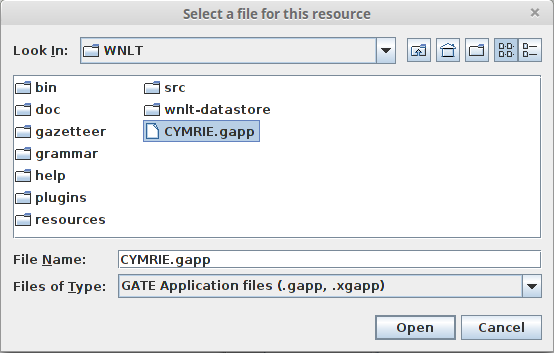

The getting started with CYMRIE is a step-by-step guide which will take you through the basic steps of loading the CYMRIE system and processing a small corpus of BBC Cymru Fyw news stories. The guide is split into three sections. The first section is about loading WNLT in GATE using the CREOLE plugin manager, the second section is about loading CYMRIE and processing a corpus, and the third section is about creating, populating and processing a new corpus in CYMRIE pipeline.
Step 1: From the File menu in GATE open the CREOLE Plug-in Manager by choosing the Manage CREOLE Plugins option
Step 2: From the new window (CREOLE Plug-in Manager) click on the plus sign located at the top-left corner of the window
Step 3: A new dialog box appears, click on the Select a Directory button and select the directory WNLT which is located in your local drive to the place where you have downloaded and extracted the WNLT-CYMRIE.zip.
Step 4: Once you have selected WNLT from your drive click Open in the dialog box
Step 5: The path to WNLT should now appear in the white box of the dialog window, click OK to close the window
Step 6:The WNLT plugin should now appear in the list of plugins as seen below. Check the Load Now checkbox, click on Apply All button and Close the CREOLE Plug-in Manager window
Step 1: From the File menu in GATE load CYMRIE by choosing the Restore Application from File option
Step 2: Select the file CYMRIE.gapp located in the WNLT folder and click Open

Step3 : Inspect the loaded Processing Resources at the right hand side of GATE . You should see list of processing resources like the one below. Also the corpus BBC Cymru Fyw is loaded under the Language Resources and the wnlt-datastore is loaded under Datastores.
Step 4: Double click on CYMRIE application and the pipeline will appearing on screen as seen below
Step 5: The BBC Cymru Fyw corpus should be already selected as the corpus for processing as see below if not selected it from the drop-down box
Step 6: Click on Run this Application button
Step 7: Double click (or right click and open) on BBC Cymru Fyw corpus located in Language Resources to view the list of documents contained in the corpus.
Step 8: Double click (or right click and open) on any of the documents in the corpus to open it
Step 9: Under the Language Resources double click (or right click and show) a document from the list to view its contents
Step 10: Click on Annoation Sets to view the annotations produced by the pipeline.
Step 1: From the File menu create a GATE Corpus by choosing New Language Resource > GATE Corpus
Step 2: In the pop-up dialog box name the Corpus e.g. MyCorpus and click the OK button
Step 3: The new corpus should now appear on the left side panel under Language Resources
Step 4: Save the corpus to the wnlt-datastore by right-clicking on the corpus icon and selecting Save to Datastore
Step 5: From the pop-up dialog box select wnlt-datastore and click the OK button
Step 6: From the File menu create a GATE Document by choosing New Language Resource > GATE Document
Step 7: In the new dialog box
a) Give a Name to the document , in this example 'Pryder am gynllun'
b) in the encoding field type utf-8
c) Select the document by typing a web address (URL) in this example 'http://www.bbc.co.uk/cymrufyw/35867934'
Alternative c) Instead of typing a web address you can Open a document from your local drive by clicking the Folder button on the right hand side and selecting a local document of your preference ( list of supported document formats at https://gate.ac.uk/sale/tao/splitch5.html#x8-940005.5)
Step 8: Double click on the Corpus (My Corpus) icon located under the Language Resources to open the Corpus Editor
Step 9: Click on the Green Cross button (circled in red below) to open the Add document(s) to this corpus dialog box
Step 10: Select the document (in this case Pryder am gynllun) and click the OK button
Step 11: Double click on CYMRIE application (located in Applications) to view the pipeline as seen below.
Step 12: Select MyCorpus from the Corpus drop-down box
Step 13: Click the Run this Application button to execute the pipeline.

Step 14: Double click the 'Pryder am gynllun' document icon from the Language Resources to view the document
Step 15: Click on Annotation Sets button to reveal the produced annotations
Step 16: Toggle the Annotation Types ON and OFF from the left hand side panel by checking - uncheking the relevant boxes.